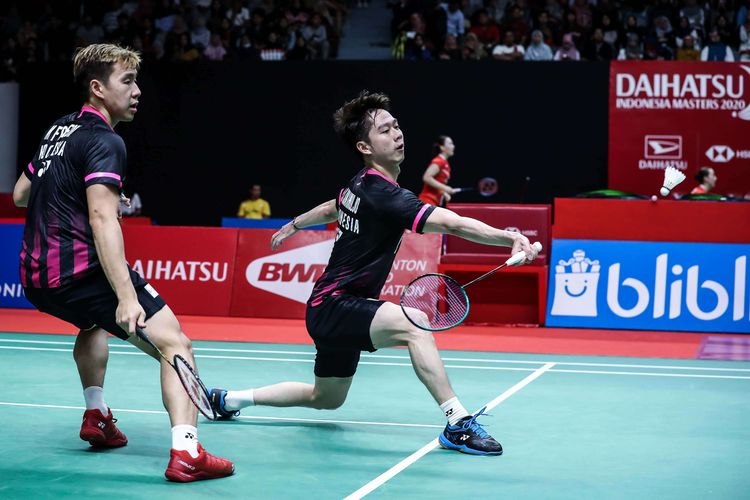

Hobi
Hobi Saya adalah bermain Bulu tangkis atau badminton, adalah suatu olahraga raket yang dimainkan oleh dua orang (untuk tunggal) atau dua pasangan (untuk ganda) yang saling berlawanan.
"Perkenalkan saya MIFTAHULJANNAH, Saya Mahasiswi Universitas Pelita Bangsa, saya jurusan Teknik Informatik semester 6"
Hobi Saya adalah bermain Bulu tangkis atau badminton, adalah suatu olahraga raket yang dimainkan oleh dua orang (untuk tunggal) atau dua pasangan (untuk ganda) yang saling berlawanan.
Berikut riwayat pendidikan saya dari Sekolah dasar sampai Sekolah Menengah Kejuruan

Pada satuan tingkat sekolah dasar, siswa merupakan anak didik yang perlu untuk di arahkan, dikembangkan, dan dijembatani ke arah perkembangannya yang bersifat komplek. Maka dari itu pendidikan di sekolah dasar pada hakekatnya merupakan pendidikan yang lebih mengarahkan dan lebih banyak memotivasi siswa untuk belajar.
Sekolah menengah pertama (disingkat SMP) adalah jenjang pendidikan dasar pada pendidikan formal di Indonesia yang ditempuh setelah lulus sekolah dasar (atau sederajat). Sekolah menengah pertama ditempuh dalam waktu 3 tahun, mulai dari kelas 7 sampai kelas 9. Pada tahun ajaran 1994/1995 hingga 2003/2004, sekolah ini pernah disebut sekolah lanjutan tingkat pertama (SLTP). Setelah lulus, saya memutuskan untuk lanjut ke SMA
SMAN 2 PANGKAL PINANG adalah salah satu bentuk satuan pendidikan formal yang menyelenggarakan pendidikan menengah sebagai lanjutan dari SMP/MTs atau bentuk lain yang sederajat atau lanjutan dari hasil belajar yang diakui sama/setara SMP/MTs. ( UU Nomor 20 Tahun 2013, Pasal 18 ayat [3]). Pendidikan kejuruan merupakan pendidikan menengah yang mempersiapkan peserta didik terutama untuk bekerja dalam bidang tertentu. (UU Nomor 20 Tahun 2013, Penjelasan Pasal 15).
Pengalaman kerja saya di PT. Panasonic Gobel Energy Indonesia